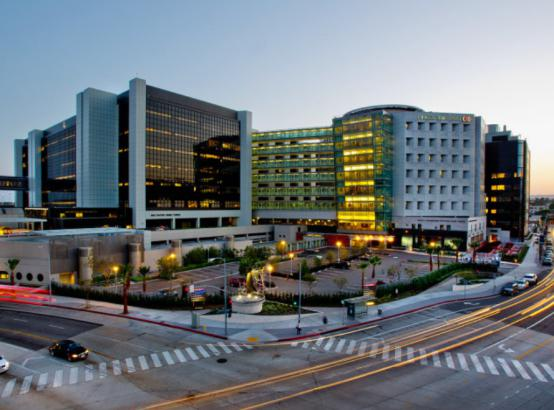
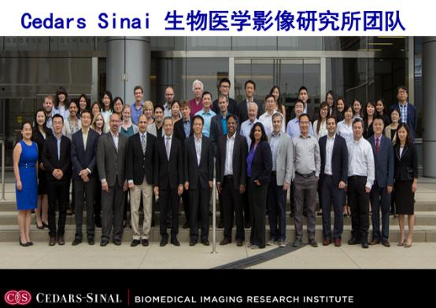
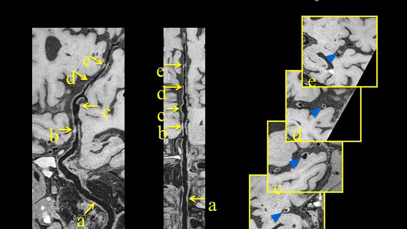
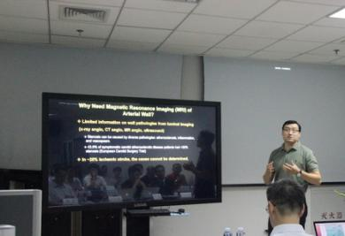
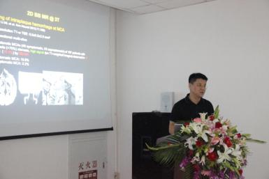
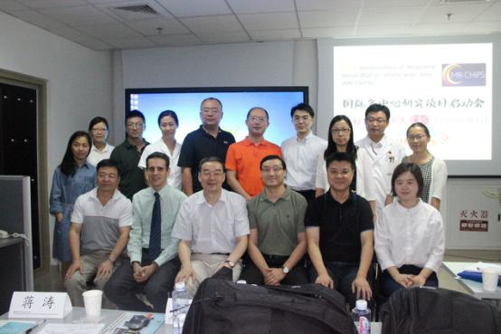

Whole Brain Vessel Wall Imaging in Stroke Patients:
An International Multi-Center Registry (WISP)
颅内动脉高分辨管壁成像国际多中心研究研讨会
中国·北京 2016.08.28 启动
- 参加单位 |
- 多中心介绍
2016 年 8 月 28 日，由美国西达-‐赛奈医学中心(Cedars Sinai Medical Center, Los Angeles)发起，西门子医疗独家提供科研支持，国内十一家大型综合医院（排名不分先后） 共同参与的国际多中心科研项目”全脑血管壁成像国际多中心注册登记研究(WISP)”在北京 朝阳医院正式启动，来自全球的 50 多位放射学专家汇聚一堂，共同探讨如何更好的通过磁 共振早期发现脑卒中的蛛丝马迹... 更多>>
在我国，脑卒中具有发病率高、死亡率高和致残率高的特点，是严重威胁人类健康的重大 疾病。颅内大动脉粥样硬化性狭窄是中国缺血性卒中亚型中的重要类型，因此对于颅内动脉斑 块的识别显得尤为重要。目前临床常用的评价颅内动脉狭窄的影像技术如经颅多普勒、CT 血管 成像、磁共振血管成像(MRA)只能显示血管狭窄的程度，却无法判断狭窄处管壁病变原因；高 分辨率磁共振管壁成像作为目前惟一可以实现活体内动脉管壁结构分析的无创技术，对判断颅 内动脉狭窄的病因及指导治疗有很高的临床应用价值。然而，目前临床上主流成像方法均为 2D 采集，并不能对全脑管壁病变情况进行全面评估。
2016 年 8 月 28 日，由美国西达-‐赛奈医学中心(Cedars Sinai Medical Center, Los Angeles)发起，西门子医疗独家提供科研支持，国内十一家大型综合 医院共同参与的国际多中心科研项目” 全脑血管壁成像国际多中心注册登记研究(WISP)”在北京朝阳医院正式启动，来自全球的 50 多位放射学专家汇聚一堂， 共同探讨如何更好的通过磁共振早期发现脑卒中的蛛丝马迹。
该研究由美国西达-‐赛奈医学中心生物医学影像研究所所长李德彪教授发起。西达-‐赛奈医学中心坐落在美国加利福尼亚州洛杉矶，是美国西海岸最大的 非营利性医院，包括神经、心血管等超过 11 个专科排名全美前列，因而也受到洛杉矶富豪、名流和好莱坞明星家庭的青睐，成为他们的“御用医院”。
李德彪教授团队一直致力于磁共振心血管科研领域创新工作，在全球享有盛誉。近二十年来一直使用西门子磁共振进行核心技术研发，已形成多领域，跨学科的多模态影像学技术研发团队。
2014 年以来，李教授团队在西门子高端磁共振平台上开发的最新全脑血管壁成像科研序列，可以对颅内动脉管壁进行高分辨成像，清晰显示管壁形态，判别有无高危易损斑块
该科研项目的目的是通过各合作伙伴的科研合作，对缺血性脑卒中病因学进行精准分型，同时对高危斑块进行早期筛查、精准诊断，从而对缺血性脑卒中的临床诊治提供一个新的影像学手段。
首批参与多中心项目的医院包括： 首都医科大学附属朝阳医院，首都医科大学附属宣武医院，四川大学华西医院，福建医科大学附属协和医院，中国人民解放军火箭军医院，北京航天中心医院，北京顺义区人民医院，天津市第一中心医院，天津市环湖医院，北京中医科学院广安门医院，郑州大学第一附属医院（以上排名不分先后）。
作为该多中心项目的合作伙伴，西门子医疗为项目提供技术支持并且积极推动项目进展，促成了 Cedars Sinai 医学中心与国内多家科研医院之间的临床科研合作。西门子一直致力于推动将科研技术转化为临床常规诊断，西门子医疗科研合作团队经理欧瑞博士在项目启动会上介绍了“磁共振同时多层成像技术(SMS)”通过与客户的合作和验证，不断改进完善，从而推向临床。同样，西门子也期待多中心项目中采用的血管壁成像技术在不久的将来能够广泛应用于临床，使更多的患者受益。
本次大会由北京朝阳医院放射科主任蒋涛教授主持并致欢迎辞，感谢多中心研究美方及全国各医院的积极参与。
美国西达塞奈医学中心(Cedars Sinai Medical Center, Los Angeles)樊朝阳博士最先介绍了颅内血管成像技术的发展历程以及技术的原理。最新的血管壁序列通过反转恢复脉冲将血管内血液信号抑制，实现了三维采集扫描范围达到全脑覆盖， 0.5 毫米各向同性的高空间分辨率可以任意角度观测血管壁结构。
Cedars 医学中心樊昭阳博士
随后 Cedars Sinai 医学中心杨旗博士对项目使用的血管壁科研技术进行了介绍。该技术能够清晰显示颅内动脉管壁，直接观测到管壁的病变情况，弥补了传统亮血 MRA图像的不足，对于颅内动脉狭窄的原因，脑卒中的早期预防，危险评估以及分型辨别有重要价值。
Cedars Sinai 医学中心杨旗博士
随后，参与会议的嘉宾对于项目采用的新技术兴趣浓厚，纷纷分享心得体会和计划的研究方向。福建医科大学附属协和医院的孙斌教授和天津第一中心医院的夏爽教授也分享了自己在脑卒中研究中的体会。
多中心项目成员代表合影
相信在全脑血管壁成像新技术的带动下， 相信随着全脑管壁成像技术的进一步应用，可以对颅内动脉斑块形成三维全景图像，使显示斑块更有立体感，更直观，提高识别颅内动脉易损斑块的可靠性，脑卒中的早期精准诊断和筛查将会迎来崭新的局面。西门子医疗也将致力于将国际多中心研究验证的最新技术早日推向市场，造福更多患者。